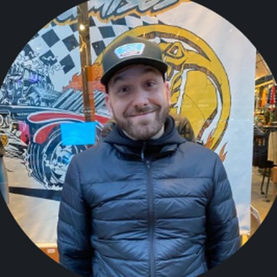

I build what design runs on: the systems, patterns and ways of working that let a product team make good decisions without me in the room.
I’ve spent more than 20 years designing digital products. I started as a web designer in 2003, worked independently for enterprise and B2B clients, and founded WebCarpet, a six-person product agency. At Oracle NetSuite I went from UX designer to Manager of Experience Design in the Global Innovation team, where I led the NetSuite Next concept. At Lodgify I grew design from 2 people to 10, built Garden, the company’s design system, and then stepped back into a hands-on role to design the AI Co-Host.
“My main role consists in deconstructing problems and leading people to create solutions where everyone can say: it makes sense.”
How I described my job in 2020. It still holds.
Lately that means working with AI as a design material, not a talking point: designing agents people can trust, and using AI in how design itself gets done.